Project 3-1
Link: https://cal-cs184-student.github.io/sp22-project-webpages-laursl/proj3-1/index.html
Overview
In this project I implemented ray generation that takes input coordinates from image space and generates a ray in world space. I implemented ray-primitive intersection for triangles and spheres. I implemented direct and indirect lighting for global illumination. I implemented adaptive sampling to reduce the amount of samples needed for different sections of images.
Part 1
We take a pixel position in image space and convert it to a Ray in world space. This is done by translating and scaling the coordinates. The Ray's origin is at the camera.
Triangle intersection is done using Moller-Trumbore's algorithm, which solves this equation.
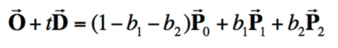
 The equation sets the equation for a ray equal to the equation for a point in the triangle that the ray intersects. By solving it, we find t, the time of intersection, and b1 and b2, which can be turned into barycentric coordinates alpha = 1 - b1 - b2, beta = b1, gamma = b2 that describe the point where the ray intersects the triangle.
Since the algorithm returns the barycentric coordinates at the intersection, these can be easily turned into the normal vector by interpolating the three vertex normal vectors.
The equation sets the equation for a ray equal to the equation for a point in the triangle that the ray intersects. By solving it, we find t, the time of intersection, and b1 and b2, which can be turned into barycentric coordinates alpha = 1 - b1 - b2, beta = b1, gamma = b2 that describe the point where the ray intersects the triangle.
Since the algorithm returns the barycentric coordinates at the intersection, these can be easily turned into the normal vector by interpolating the three vertex normal vectors.
Some examples of normal shading for small .dae files.


Part 2
BVH implementation
If there are less primitives in the BVH than the max_leaf_size, I just return a root node. Else, I find the longest axis of the node's bounding box and split along its midpoint. I compare the centroid of each primitive's bounding box and depending on if it is smaller or larger than the average of all the primitive's centroids along the longest axis, put them in the left or right node. If this causes all the primitives to lie on one side of the split point, I use another axis. I then reursively construct the left and right BVHs.
Some examples of normal shading for larger files.

 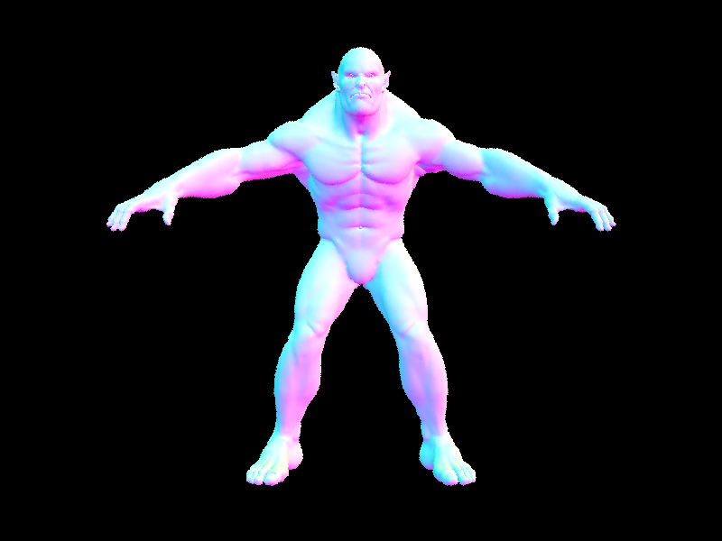
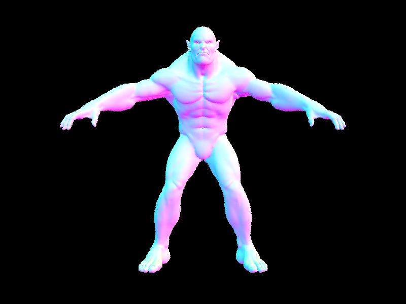
The following are all done on my laptop. With BVH, beetle.dae takes 0.3886s to render. Without, it takes 86.2479. This is a 222x speed up.
With BVH, cow.dae takes 0.4079s to render. Without, it takes 69.4390s to render. This is 170x speed up.
With BVH, banana.dae takes 0.2009s to render. Without, it takes 22.7952s. This is a 113x speed up.
With BVH, if the ray doesn't intersect the bounding box at a node, the whole node is ignored and doesn't have to be traversed, which saves a lot of time.
Part 3
Direct Lighting with Uniform Hemisphere Sampling samples within the unit hemisphere and if there is an intersection, uses the reflection equation from lecture to calculate outgoing light. I multiply by a cosine term and the BSDF and divide the emitted light by the PDF to get the Monte Carlo estimate.
Direct Lighting by Importance Sampling Lights samples each light in the scene directly. For each light in the scene, we sample directions between it and the hit point. If it is a point light source, we sample it once, otherwise we sample ns_sample_rate times. If the direction vector from sampling is in front of the object (e.g z-axis value > 0), then I cast a ray from the hit point to the light. If there is an intersection, this determines the hit point is in a shadow. If not, I perform the same calculations as in hemisphere sampling and accumulate the irradiance.
Example of both implementations of direct lighting. The first is using importance sampling and the second uniform hemisphere sampling.
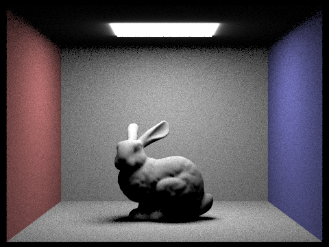
Example 2 of both implementations of direct lighting. The first is using importance sampling and the second uniform hemisphere sampling.
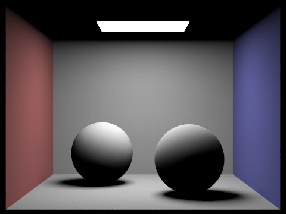
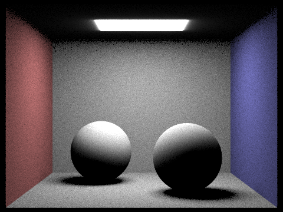
Uniform hemisphere sampling produced images with more noise. All images were rendered using 64 samples per pixel and 32 light rays.
Here is the bunny rendered with 1, 4, 16, and 64 light rays.
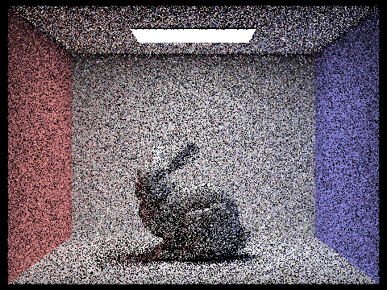
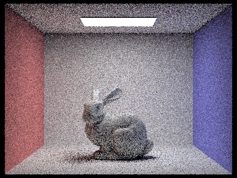
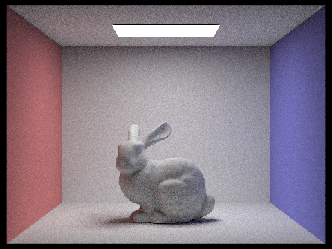
Part 4
For indirect lighting, if the ray's depth is < 1, I return just the result of one bounce to acheive direct illumination. If the ray's depth is equal to max_ray_depth, we calculate the result of one indirect bounce. Else, while the ray's depth is not 1, we recursively call at_least_one_bounce_radiance while reducing the ray's depth. If the ray intersects the node, we flip a coin with probability 0.65 to decide whether to continue recursing. Each call's result is summed for the final result.
Example 1 of global illumination.
Example 2 of global illumination.
Example of ONLY direct illumination
Example of ONLY indirect illumination
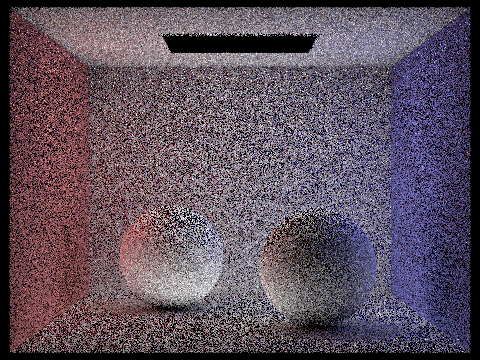
Here is CBbunny.dae rendered with max_ray_depth set to 0, 1, 2, 3, and 100. I used 1024 samples per pixel for the first image, then 20 for the rest due to time constraints.
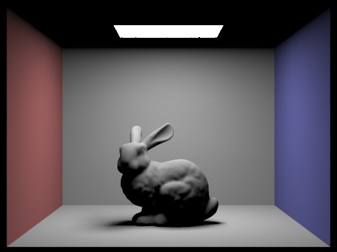
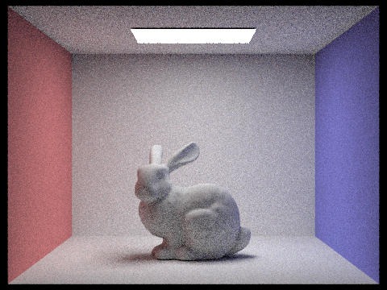
Here is CBspheres_lambertian.dae rendered with various sample-per-pixel rates 1, 2, 4, 8, 16, 64, 1024. I used a max_ray_depth of 5.
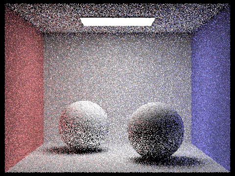
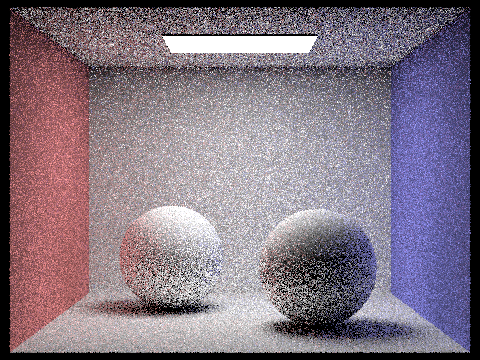
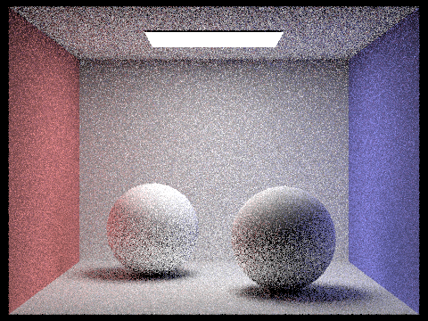
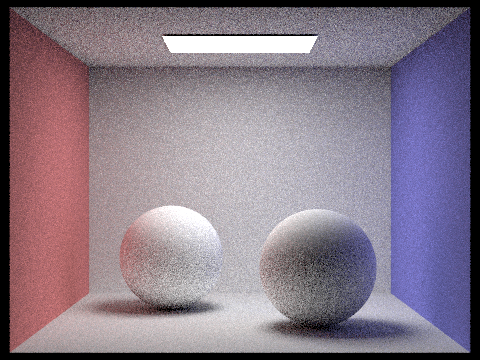
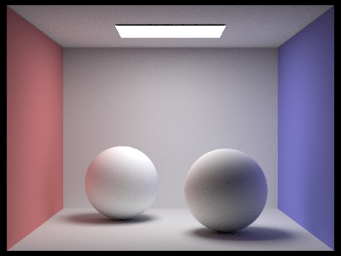
Part 5
For adaptive sampling, I keep track of the sum of each sample's illumination, and the sum of each sample's illumination squared. Every samplesPerBatch sample, I check if the pixel has converged. To do so, I calculate the mean, variance, and standard deviation of the samples so far, and then calculate I = 1.96 * standard deviation / sqrt(samples so far). I then check if I is <= maxTolerance, a threshold that is 0.05 by default, times the mean. If so, I stop sampling this pixel and update its radiance. I save the actual number of samples used in the sampleCountBuffer. This allows more samples to be used on pixels that take longer to converge, and less to be used on pixels that converge fast, saving time.
CBbunny with adaptive sampling, with 1 sample per light and 5 for the max ray depth.
CBbunny with adaptive sampling's sample rate image. I really don't know why it looks like this though.
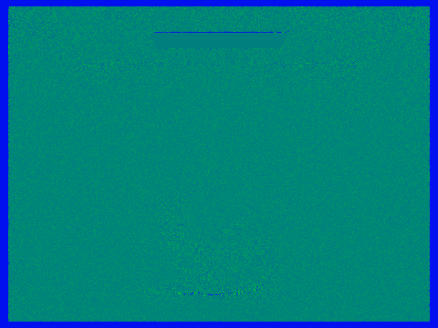